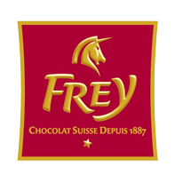

Frey
Tvrtka je osnovana godine 1877. od strane dvojice braće po imenu Robert i Max Frey, koji su prije otvaranja same tvrtke bili već iskusni u proizvodnji čokolade. Godine 1906. postaje javna tvrtka i počinje sa proizvodnjom čokolade i čokoladnog praha.
Tijekom prvog svjetskog rata, tvrtka je profitirala zbog švicarskog neutralnog položaja, no iako je izvoz čokolade bio lak, prikupljanje sirovog materijala poput kakao praha nije bilo toliko lako. U vremenu između prvog i drugog svjetskog rata, vodstvo nad tvrtkom je preuzeo Robert Frey jr., sin Robert Frey-a, dok su se praća postupno povlačili iz posla.
Tijekom drugog svjetskog rata, tvrtka je također imala problema budući da je inozemno trgovanje bilo otežano ratom, primjerice preko novih uvoznih pravila na kakao i šećer, te također činjenica da je mnogo zaposlenika dobilo poziv za vojnu službu.
Nakon rata situacija je krenula na bolje, te je godine 1950. tvrtka Migros preuzela tvrtku Chocolate Frey AG, dok je rukovodstvo nad tvrtkom ostalo u rukama Roberta mlađeg.
Godine 1963. počela je gradnja današnjeg sjedišta, a pogon je preseljen iz mjesta Arau u Buchs. U nadolazećim godinama, tvrtka se modernizirala, te došla do vodećeg mjesta na domaćem tržištu. 90-ih godina prošlog stoljeća pokrenuli su projekt kojim su doprinjeli većem izvozu proizvoda.
Proizvodi ove tvrtke se također proizvode u posebnim linijama poput one tvrtke Lindt, a neke od tih linija su: Giandor, Supreme i Prestige.
Detaljnije informacije mogu se naći na web-stranici Frey.